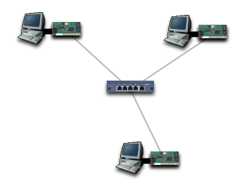
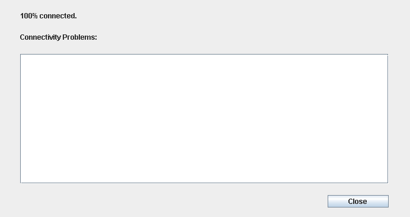

Drag 3 computers from the toolbar to the main display.
Drag a hub to the centre of the computers.
Drag an Ethernet card to each computer.
Click on the Ethernet cable icon, then drag between each Ethernet card and the hub.

Right-click on the hub, and enable its power.
Right-click on each card, and install its device drivers.
Right-click on the top-left computer, and set its IP address to 146.87.1.1, and its netmask to 255.255.255.0.
Set the top-right computer to 146.87.1.2/255.255.255.0 and the bottom computer to 146.87.1.3/255.255.255.0.
Check that you have done this correctly, by testing the connectivity.
